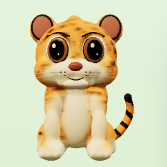
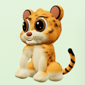
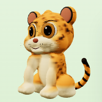

Extraits du véritable accueil, 390 × 844. Même lumière, caméra, pose idle à t=0 et interface. Les images sont agrandies ici ; les liens ouvrent leur taille réelle dans le jeu. Le détail des échelles et les vues desktop sont dans proof.json. Ces comparaisons ne constituent pas une validation artistique finale.
| Vue | Avant — v1 | Après — v2 |
|---|---|---|
| Face |  Voir dans l’accueil | Voir dans l’accueil |
| Trois quarts |  Voir dans l’accueil |  Voir dans l’accueil |